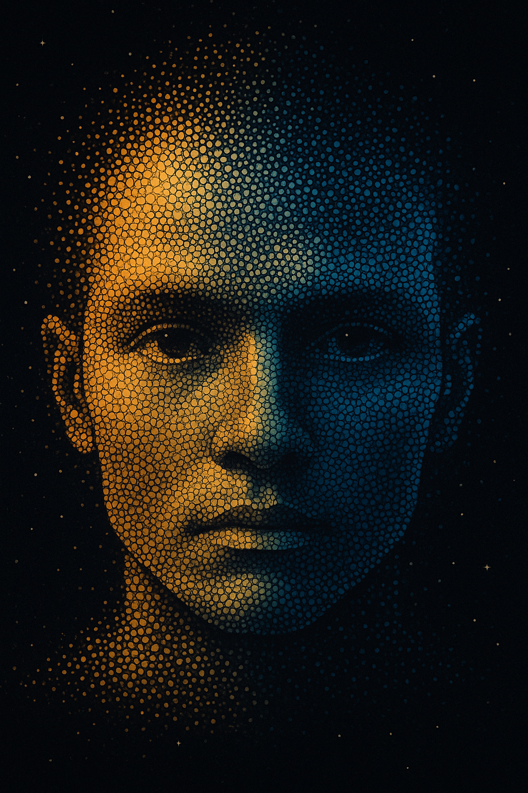
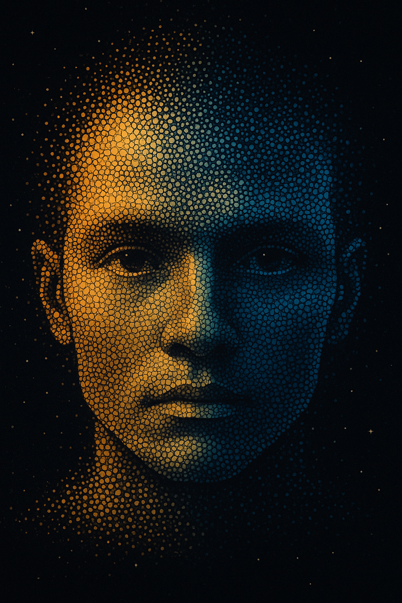

Tjänster & konsultation
Jag erbjuder utveckling av webbsidor, appar och digital rådgivning för både privatpersoner och företag.
Privat rådgivning: 800 kr per timme
Företagsuppdrag: 1400 kr per timme
Jag erbjuder utveckling av webbsidor, appar och digital rådgivning för både privatpersoner och företag.
Privat rådgivning: 800 kr per timme
Företagsuppdrag: 1400 kr per timme

 
